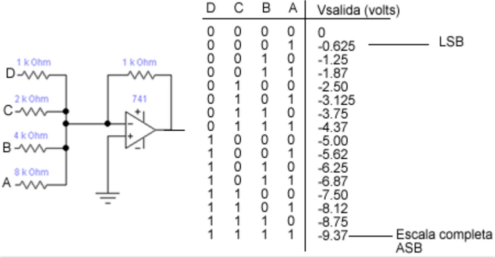

Convertidor Digital Analógico (D/A) |Unidad 4
Circuito eléctrico de un convertidor Digital- Analógico
En la actualidad existen varios métodos y circuitos para producir la operación de Digital-Analógico. Por lo
que no es tan importante conocer los diversos esquemas de circuitos, ya que los convertidores D/A
están disponibles como CI o bien como paquetes encapsulados que no requieren ningún conocimiento
de circuitos. En su lugar, es importante conocer las características significativas de realización de los
convertidores D/A, en términos generales, de manera que se puedan utilizar en forma inteligente. A
continuación se muestra como ejemplo el circuito básico de un tipo de convertidor D/A de 4 bits
utilizando un amplificador operacional en configuración de sumador con resistencias con factores de
ponderación binaria.

El operador operacional sirve como amplificador sumador, el cual produce la suma de los factores de
ponderación de estos valores de entrada. Un amplificador operacional sumador multiplica cada voltaje de
entrada por la proporción de la resistencia de retroalimentación Rs de la entrada correspondiente. Por
ejemplo: la entrada D tiene una R =1 KΩ, de manera que el amplificador operacional pasa el voltaje de D
sin atenuación. La entrada C tiene una R= 2KΩ, de manera que será atenuada en ½ . La entrada B tiene
una R=4KΩ, de manera que será atenuada en ¼. La entrada A tiene una R=8KΩ, de manera que será
atenuada, en 1/8.
Vsal= - (VD +1/2 VC +1/4 VB +1/8 VA)
La salida del amplificador sumador es un voltaje analógico que representa una suma de los factores de
ponderación de las entradas digitales.
La conversión digital-analógica (D/A) es el proceso de tomar a un valor
representando en código digital (como binario directo o BCD) y convertirlo en un voltaje o corriente que
sea proporcional al valor digital. Como ejemplo, a continuación se ilustra el diagrama a bloques, su tabla
de valores y sus formas de onda de salida de un contador de 4 bits, para convertir de digital a analógica,
su señal en código digital. En general:
Salida analógica= K * entrada digital
K= factor proporcionalidad y tiene un valor constante, puede estar en unidades de voltaje o corriente.
Ejemplo 1.
Un convertidor D/A de 5 bits tiene una corriente de salida. Para una entrada digital de 10100, se produce
una corriente de salida de 10 mAmp. ¿Cual será el valor de la corriente de salida para una entrada digital
de 11101?
Sabemos que: 101002=2010
1
0100=k*20=10mAmp
K=10/20mAmp=0.5 mAmp.
11101=29
La salida digital de la computadora se conecta a un DAC, que la
convierte a un voltaje o corriente proporcional a la información de bits que tiene a su entrada.
Actuador
Es un circuito ó dispositivo que sirve como actuador para el control de la variable física, regida
por la señal analógica que proviene del DAC. Ejemplo: Máquinas robotizadas, automotrices, etc.